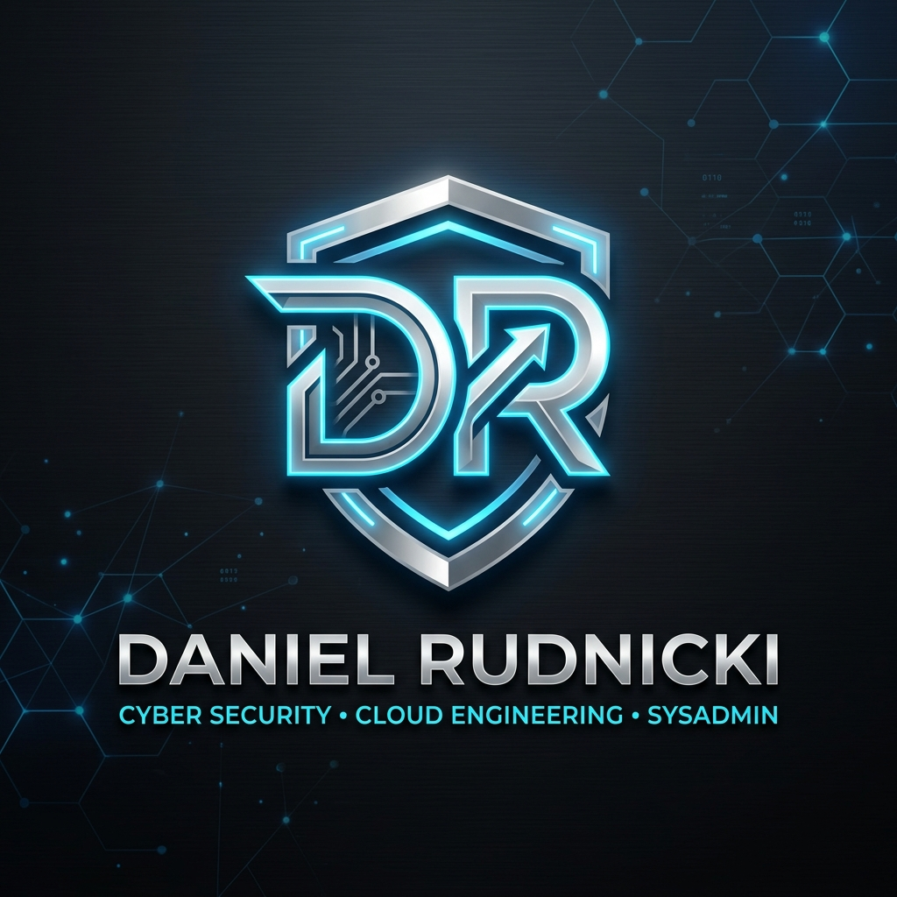

Hallo, ich bin Daniel Rudnicki
Open-Source & Network Security Specialist
Spezialist für Systemhärtung, Linux/Unix-Administration und Netzwerk-Integrität. Über zwei Jahrzehnte Praxis in der Konzeptionierung und Absicherung quelloffener Infrastrukturen, restriktiver Firewalls und datenschutzkonformer Architekturen.

System Status: Active
Technische Expertise
Ein Überblick über meine Kernkompetenzen in der Administration, Absicherung und Prozessstabilität.
Linux & Serverlandschaften
Distributionen-übergreifende Administration (Debian, RHEL, Ubuntu), OpenBSD und Solaris. CIS-konforme Systemhärtung (Level 2) und dateibasierte Berechtigungskonzepte.
Sicherheit & Netzwerke
Konzeption restriktiver Edge-Firewalls und VPN-Gateways mit OpenBSD (PF/CARP/IPsec), OPNsense, pfSense und VyOS. VLAN-Segmentierung, VPN/IPsec Tunnel, Packet Inspections via Wireshark und tcpdump.
Privacy & Virtualisierung
Aufbau privater Virtualisierungsumgebungen mit Proxmox VE und Docker. Härtung von GrapheneOS, Integration von Tails OS und TOR-Routing.
Qualitätsmanagement & Automatisierung
Strukturierte Qualitätssicherungsverfahren zur Fehlerreduktion und Einhaltung von QM-Vorgaben. Automatisierungskonzepte mit Python, C++, Bash-Skripten, PHP und Perl.
Beruflicher Werdegang
Konsequente Praxiserfahrung in Systemadministration, Qualitätssicherung und industrieller Automatisierung.
System-, Edge-Firewall- & VPN-Administration
Private non-monetäre Großprojekte (Vollzeitfokus 2012–2014)
Aufbau und Absicherung komplexer Linux-Serverlandschaften sowie redundanter Edge-Firewalls und VPN-Gateways auf OpenBSD-Basis (PF, IPsec/WireGuard). Implementierung restriktiver OPNsense/VyOS-Systeme, VLAN-Segmentierung und kontinuierliche Protokollanalyse.
Qualitätssicherung & Qualitätsmanagement
SVB Personalleasing (Automobilfertigungslinien)
Strukturierte Einhaltung strenger Qualitätsvorgaben, Fehlerreduktion und Qualitätssicherungsmaßnahmen zur Prozessstabilität in Fertigungslinien.
Roboterprogrammierung & Automatisierung
Atlantec Braunschweig
Hardwarenahe Steuerungscode-Entwicklung für Industrieroboter und Anpassung komplexer automatisierter Bewegungsabläufe.
Bewerbungsunterlagen & Kontakt
Fordern Sie meine vollständigen Zeugnisse und Lebensläufe an oder treten Sie direkt in Kontakt.
Kontaktinformationen
Daniel Rudnicki ist bereit für anspruchsvolle Aufgaben in der Systemintegration, Härtung und Netzwerkabsicherung.
Bewerbungs-Paket anfordern
Vollständiger Lebenslauf, Zertifikate und Zeugnisse als verschlüsseltes ZIP-Archiv.